🔍 Drift Detection Report
Lab: Lab 01 - Manage Microsoft Entra ID Identities
Run ID: 8f139dd5-214d-4703-9d8b-5ab5d5b60484
Duration: 4487s
Step Results
-
selector_drift
warning
The "Welcome to Azure" screen is a subscription landing page showing "Don't have a subscription? Check out the following options" with Start/View/Learn more buttons — not a dismissible splash modal with a Cancel button. This likely appears because the account has no active subscription.
💡 Update lab instructions to reflect new element text/location
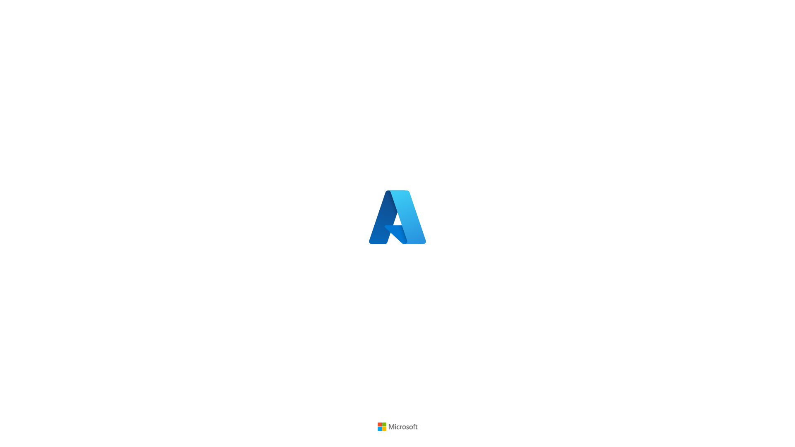

-
unexpected_ui
warning
An "Interaction Required" (需要交互) warning dialog appeared with AADSTS16000 error stating the user account from identity provider 'live.com' does not exist in this tenant. This is an account/authentication configuration issue, not instruction drift. The dialog is dismissible by clicking "Ignore" (忽略) and does not block access to Entra ID features.
💡 Consider documenting this UI element in instructions
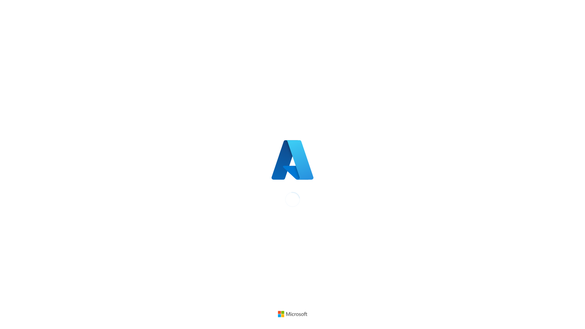
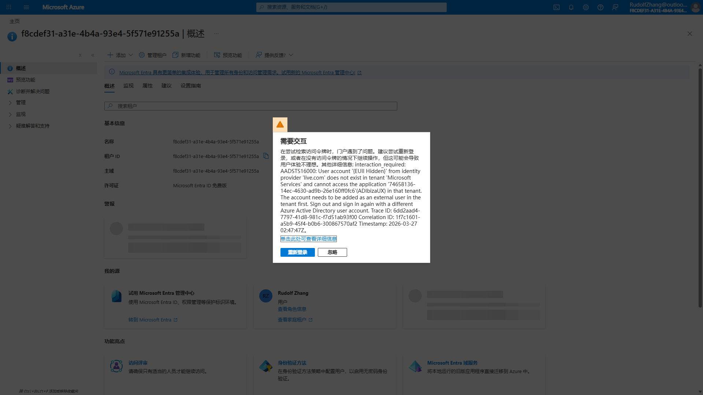

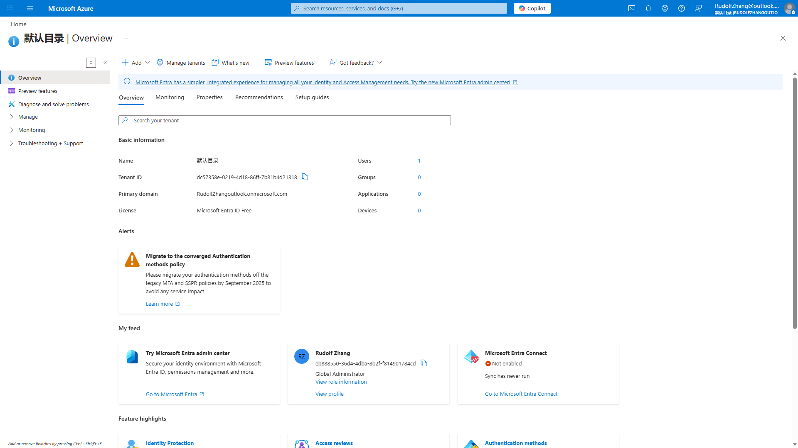
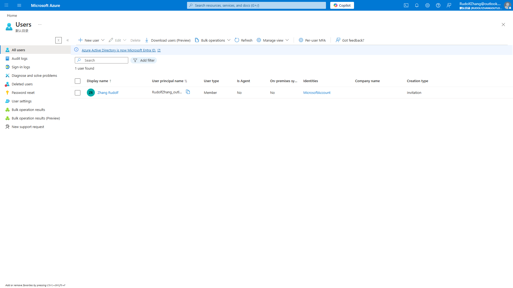
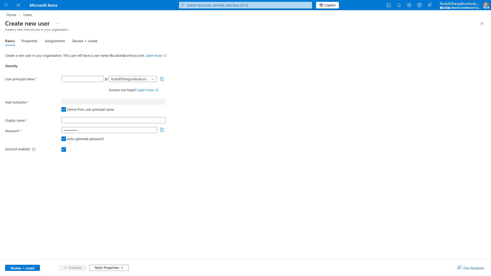
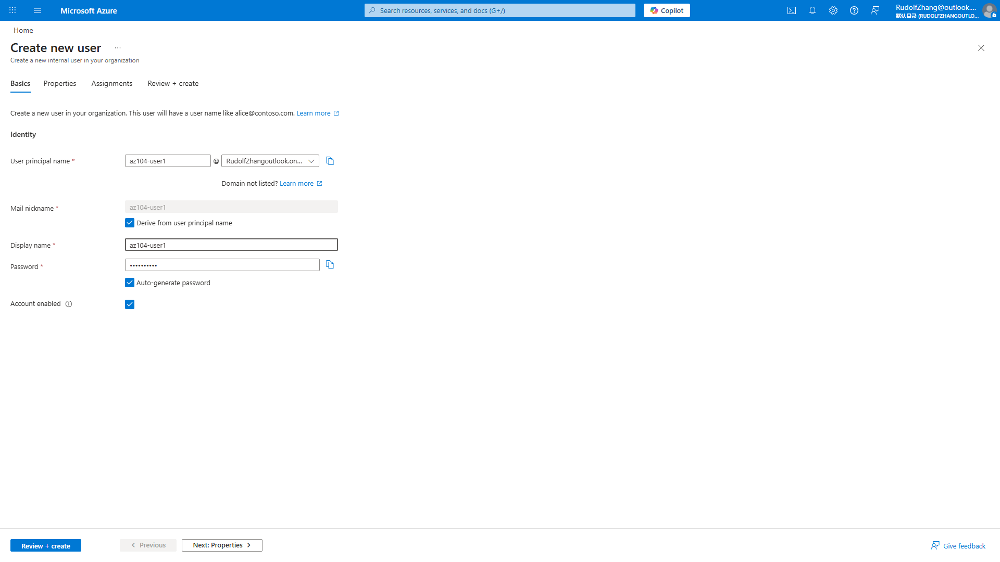

-
unexpected_ui
info
An informational banner at top states "Starting December 2025, B2B invitation emails will be sent from your organization's primary domain (e.g., contoso.onmicrosoft.com) instead of Microsoft.com." This is informational only and does not block progress.
💡 Informational UI element - does not affect lab completion
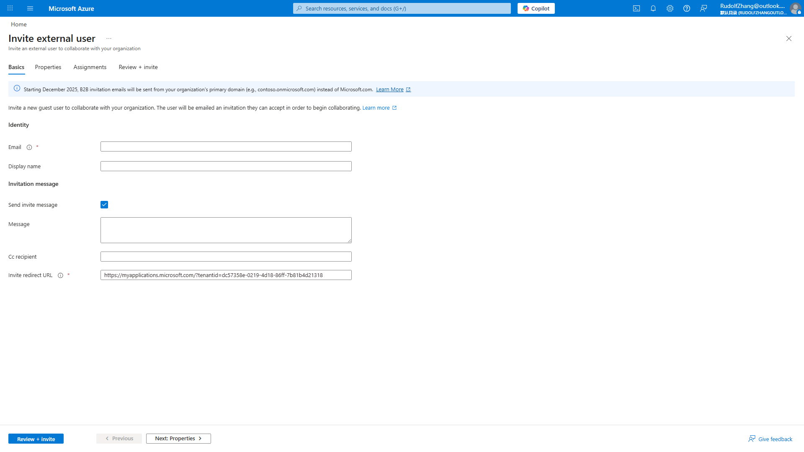
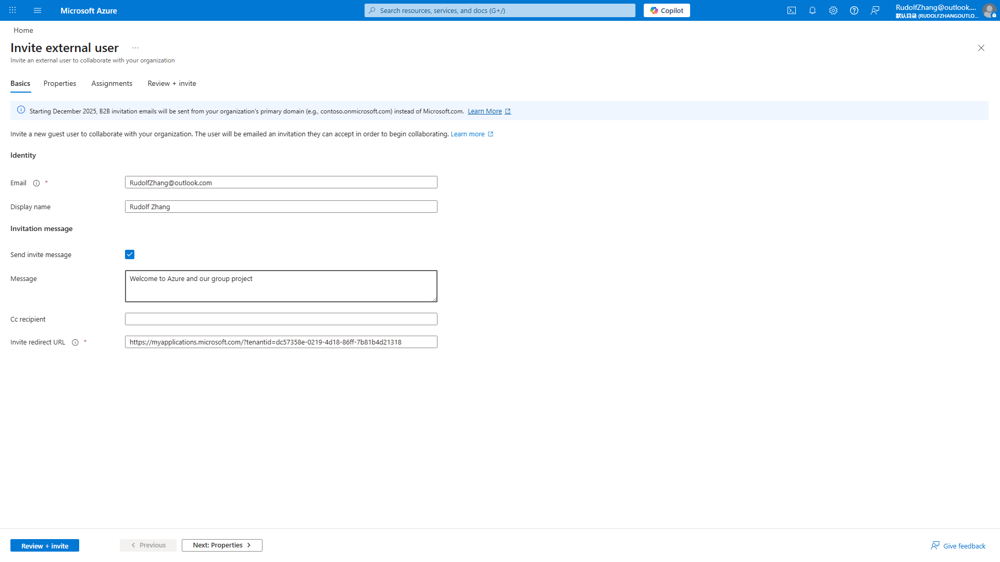

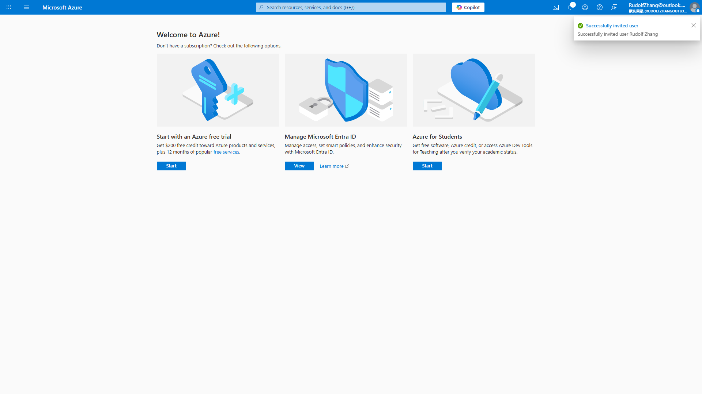
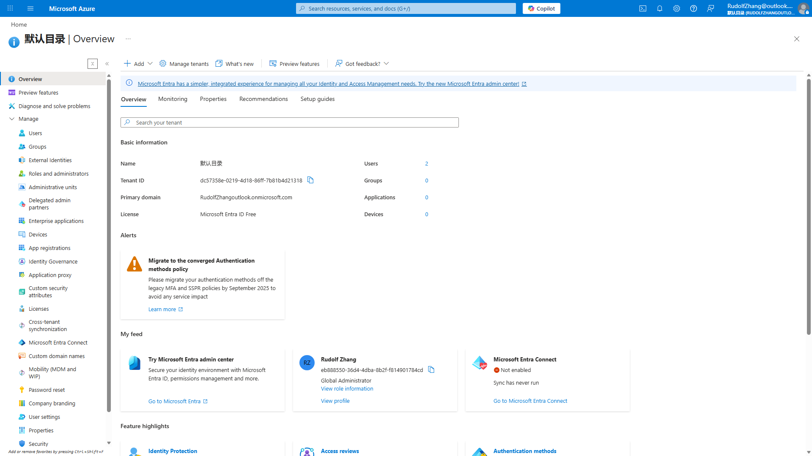
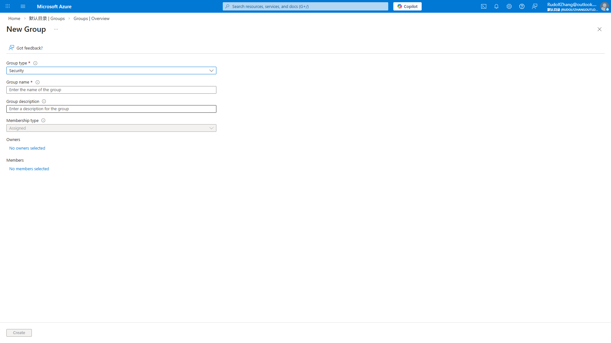
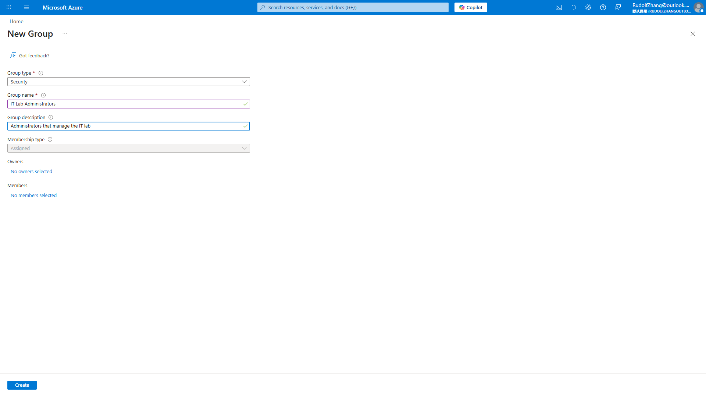
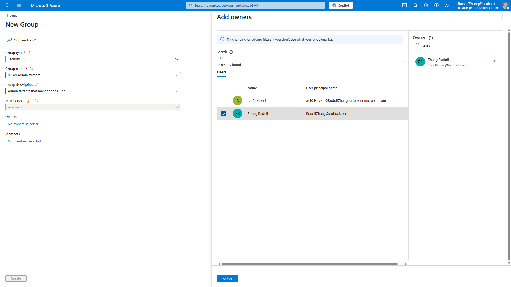
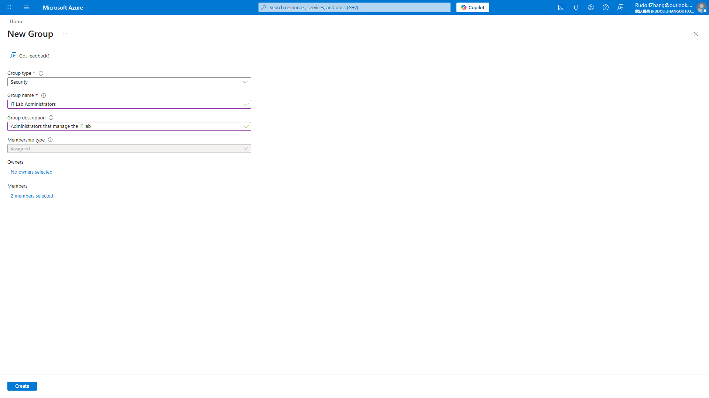
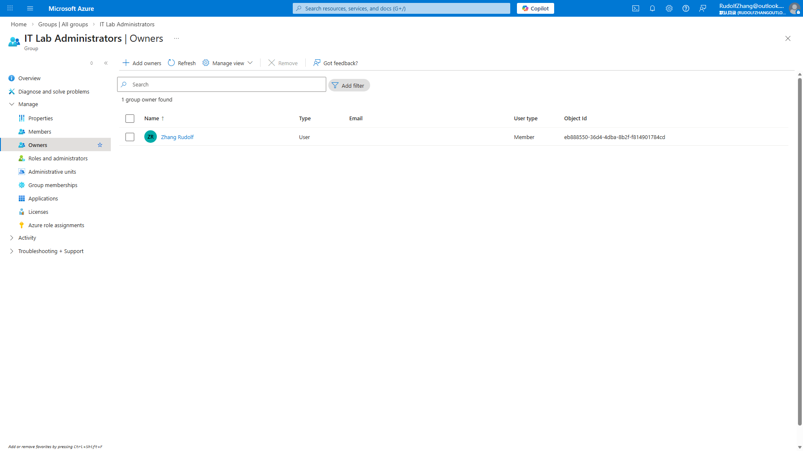